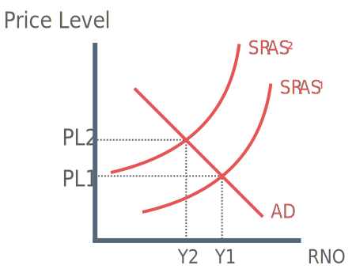
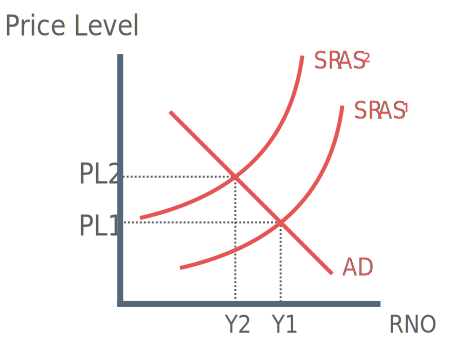

Key Terms
Inflation: A general and sustained increase in the average price level.
Disinflation: A reduction in the rate of inflation.
Reflation: An increase in real output and employment following an increase in aggregate demand.
Disinflation: A reduction in the rate of inflation.
Reflation: An increase in real output and employment following an increase in aggregate demand.
Theory
Background on Inflation
Control of inflation is one of the key macro-economic objectives. Inflation is the only macro-economic objective that is targeted at CPI = 2%.
Nigel Lawson, Chancellor of the Exchequer (1983 - 1989): “Governments inflation record is judge and jury of economic policy”. Inflation is the most important objective and the gateway to achieving other objectives.
Measurement of Inflation
RPI tends to be above CPI, as it includes the housing market.
CPI: Consumer Price Index:
CPI is a weighted price index. Used to measure change in the price of a typical “basket” of goods. Categories of spending along with their weights are changed subtly each year using information from the Family Expenditure Survey.
Changes in weights reflect changes in the spending behaviour of UK households.
Calculating a Weighted Price Index
| Category | Price Index | Weighting (%) | Price x Weight |
| Food | 106 | 25 | 2650 |
| Housing | 112 | 25 | 2800 |
| Clothing | 98 | 15 | 1470 |
| Transport | 109 | 15 | 1635 |
| Leisure | 107 | 10 | 1070 |
| Other Items | 103 | 10 | 1030 |
| 100 | 10,655 |
Spending is divided into 14 categories. Each category is weighted according to its relative importance as a proportion of total spending. Weighting is multiplied by price index.
Price indices (P x W) are then added together = 10,655
Total is then divided by number of weights giving the price index for the years.
10,655 / 100 = 106.6
1) CPI is a reflection of ‘average’ households spending patterns. It is not representative of individual households
2) The expenditure survey asks thousands of households to record their patterns of spending, however they have no obligation to do so. This lack of information distorts the construction of the basket of goods.
It has been shown that the groups most likely, to not reply to the family expenditure survey are the very rich and certain ethnic minorities, therefore the true average cannot be calculated.
3) CPI does not include house prices in its calculation. Mortgage payment represent a high proportion of spending.
4) CPI may over estimate inflation. Price rises may be due to improvements in the quality of goods and services.
The quantity theory of money, dating back to the 18th century, is the oldest theory of inflation. Having gone out of fashion in the 1930s, the quantity theory of money was revivied in its modern form by Milton Friedman in the 1950s.
The quantity theory of money is often described as too much money chasing too few goods. This essentially means that rising prices are caused by excess demand.
In order to grasp this theory, it is neccesary to first understand the Fisher equation of exchange, the brainchild of American economist, Irving Fisher.
M x V = P x Y
M = money supply
V = velocity of circulation
P = price level
Y = output
This theory assumes three things:
1) The velocity of circulation or speed at which money is spent remains fixed.
2) Money is a medium of exchange but not a store of wealth, meaning that people quickly spend any money they recieve.
3) Changes in the money supply are assumed to cause changes in the price level (rather than vice versa)
Example:
If money supply is initially £1000 and velocity is 5, output = 5000
1000 x 5 = 1 x 5000
If money supply doubles the equation =
2000 x 5 = 2 x 5000
In summary the argument made using the quantity theory of money is that if the government condones an expansion of the money supply, greater than the increase in ouput, the price level will increase (inflation).
This is because a greater money supply means that households and firms hold excess money which, when spent, pulls up the price level.
Cost-push Inflation
Cost-push inflation occurs when businesses are faced with increasing production costs. They raise their prices to maintain profit. Sources may include:
Rise in raw material cost
Rising Labour cost / wage price spiral
Higher indirect taxes

Demand-pull Inflation
Occurs when there is an increase in aggregate demand due to an increase in a component of AD.

Price indices (P x W) are then added together = 10,655
Total is then divided by number of weights giving the price index for the years.
10,655 / 100 = 106.6
Limitations of CPI
1) CPI is a reflection of ‘average’ households spending patterns. It is not representative of individual households
2) The expenditure survey asks thousands of households to record their patterns of spending, however they have no obligation to do so. This lack of information distorts the construction of the basket of goods.
It has been shown that the groups most likely, to not reply to the family expenditure survey are the very rich and certain ethnic minorities, therefore the true average cannot be calculated.
3) CPI does not include house prices in its calculation. Mortgage payment represent a high proportion of spending.
4) CPI may over estimate inflation. Price rises may be due to improvements in the quality of goods and services.
Theories of Inflation
Quantity Theory of Money
The quantity theory of money, dating back to the 18th century, is the oldest theory of inflation. Having gone out of fashion in the 1930s, the quantity theory of money was revivied in its modern form by Milton Friedman in the 1950s.
The quantity theory of money is often described as too much money chasing too few goods. This essentially means that rising prices are caused by excess demand.
In order to grasp this theory, it is neccesary to first understand the Fisher equation of exchange, the brainchild of American economist, Irving Fisher.
M x V = P x Y
This theory assumes three things:
1) The velocity of circulation or speed at which money is spent remains fixed.
2) Money is a medium of exchange but not a store of wealth, meaning that people quickly spend any money they recieve.
3) Changes in the money supply are assumed to cause changes in the price level (rather than vice versa)
Example:
If money supply is initially £1000 and velocity is 5, output = 5000
If money supply doubles the equation =
In summary the argument made using the quantity theory of money is that if the government condones an expansion of the money supply, greater than the increase in ouput, the price level will increase (inflation).
This is because a greater money supply means that households and firms hold excess money which, when spent, pulls up the price level.
Keynsian Theories of Inflation
Cost-push Inflation
Cost-push inflation occurs when businesses are faced with increasing production costs. They raise their prices to maintain profit. Sources may include:

Demand-pull Inflation
Occurs when there is an increase in aggregate demand due to an increase in a component of AD.
Advantages of Inflation
1) Business optimism
Low and stable rates of inflation that are easy to anticipate are associated with growing markets. Small amounts of inflation could therefore increase business confidence and generate investment.
2) Labour Market Efficiency
Labour markets funtion at thir best when inflation exists at a low and stable rate. If inflation is at 2% and firms need to cut real wages, they could do so by keep the nominal wage rate the same.
If there is 0% inflation in the economy and a firm is forced to make a wage cut, they must cut the nomial wage rate which is psychologically more damaging.
3) Erosion of Debt
A steady inflation rate will also help to erode debt in the economy. For example if someone take out a mortgage, the monthly repayments are a nominally fixed amount.
Over time the debtors nominal wage will increase whilst the nominal rate of mortgage repayments remains the same, making it easier to pay as time goes by. The government can also benefit from this as their budget repayments will be reduced in the event of inflation.
4) Reflection of increase in quality of goods
Inflation could possibly reflect an increase in the quality of goods or services i.e. producers set higher prices of better products.
Low and stable rates of inflation that are easy to anticipate are associated with growing markets. Small amounts of inflation could therefore increase business confidence and generate investment.
2) Labour Market Efficiency
Labour markets funtion at thir best when inflation exists at a low and stable rate. If inflation is at 2% and firms need to cut real wages, they could do so by keep the nominal wage rate the same.
If there is 0% inflation in the economy and a firm is forced to make a wage cut, they must cut the nomial wage rate which is psychologically more damaging.
3) Erosion of Debt
A steady inflation rate will also help to erode debt in the economy. For example if someone take out a mortgage, the monthly repayments are a nominally fixed amount.
Over time the debtors nominal wage will increase whilst the nominal rate of mortgage repayments remains the same, making it easier to pay as time goes by. The government can also benefit from this as their budget repayments will be reduced in the event of inflation.
4) Reflection of increase in quality of goods
Inflation could possibly reflect an increase in the quality of goods or services i.e. producers set higher prices of better products.
Disadvantages of Inflation
1) Macro-economic objective not being achieved
First and foremost, high inflation means that the macro-economic objective of low and stable inflation is not being achieved. Low and stable inflation is a particularly important objective as it is often seen as a gateway to other objectives (see below).
2) Disruption of business planning
Unpredictable inflation reduces confidence and therefore reduces investment, limiting growth.
3) Reduced competitiveness
Prices in domestic economy may rise faster than in other countries, making exports more expensive and imports cheaper.
4) A wage-price spiral / Labour Market Inefficiency
Inflationary expectations feed into wage bargaining. At higher levels of inflation, workers are likely to become unsettled. It has not been uncommon in recent years for workers to strike over inflation related issues such as wages, this in turn means that the work force become unproductive.
5) Shoe-leather costs
Inflation increases time taken to make price comparisons and making trips to banks as the opportunity cost of holding money increases.
6) Menu costs
These are the costs to firms of changing price information e.g. menus in restaurants.
First and foremost, high inflation means that the macro-economic objective of low and stable inflation is not being achieved. Low and stable inflation is a particularly important objective as it is often seen as a gateway to other objectives (see below).
2) Disruption of business planning
Unpredictable inflation reduces confidence and therefore reduces investment, limiting growth.
3) Reduced competitiveness
Prices in domestic economy may rise faster than in other countries, making exports more expensive and imports cheaper.
4) A wage-price spiral / Labour Market Inefficiency
Inflationary expectations feed into wage bargaining. At higher levels of inflation, workers are likely to become unsettled. It has not been uncommon in recent years for workers to strike over inflation related issues such as wages, this in turn means that the work force become unproductive.
5) Shoe-leather costs
Inflation increases time taken to make price comparisons and making trips to banks as the opportunity cost of holding money increases.
6) Menu costs
These are the costs to firms of changing price information e.g. menus in restaurants.